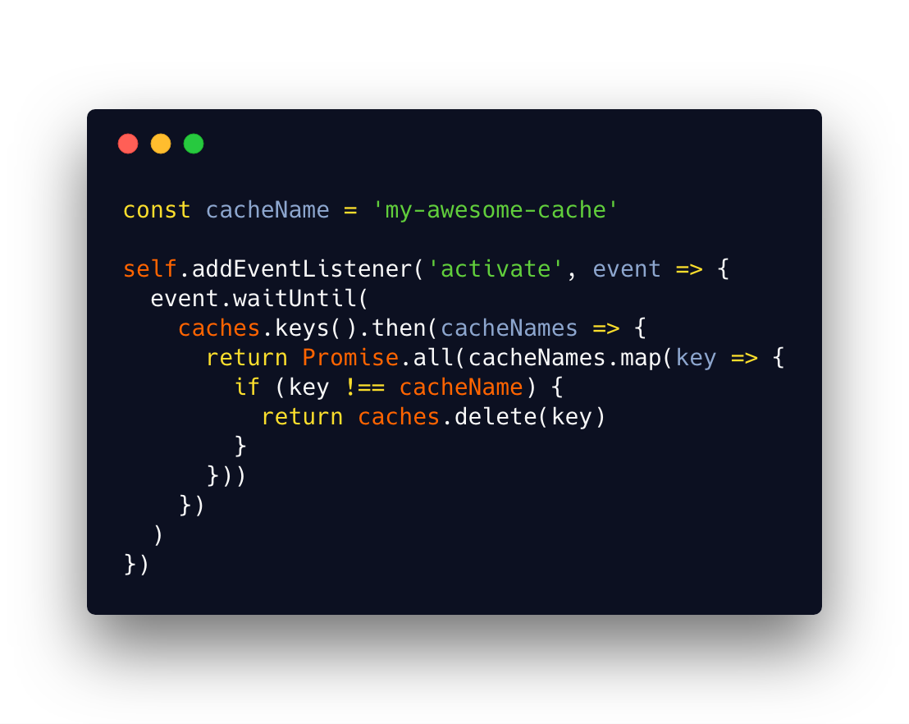
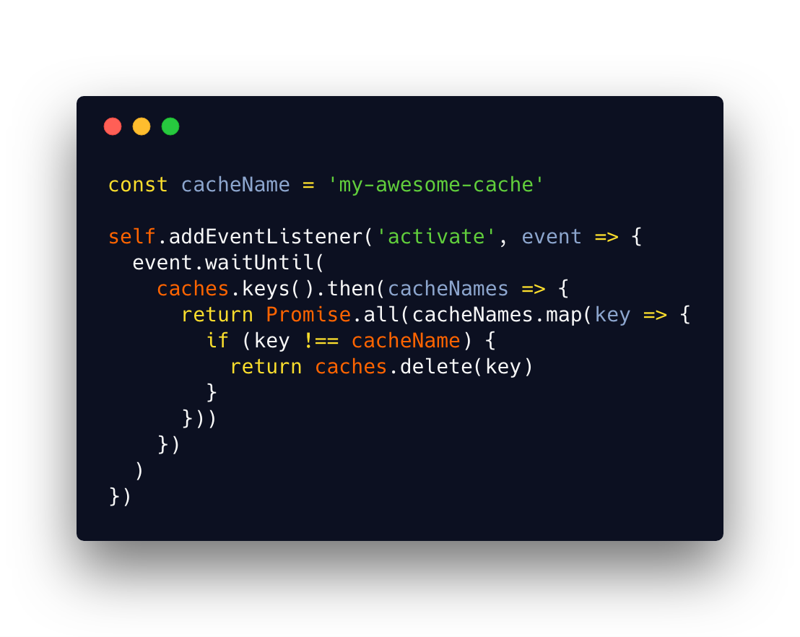

Game over, Downasaur, PWA are winning!
I'm Jevgenija
Web developer @N26 üë©‚Äçüíª
UI design enthusiast ü¶Ñ
Google Developer Group organizer üéâ
Women TechMakers lead in Latvia üá±üáª
Our plan
- PWA: Why? What? How?
- Service Worker: caching and much more
- Firestore for PWA
- I'll show PWA example
Source:
Progressive Web Apps: Great Experiences Everywhere
Wide reach + Engagement = PWA

4 main characteristics
1. Works offline

2. Behaves like a native app
 Source: Air Horner
Source: Air Horner

 Web App Manifest
Web App Manifest

3. Is fast
 App Shell
App Shell
 Source:Google Developers
Source:Google Developers
Service Worker


=> Controls network requests
Wait.. but there was AppCache
Is asyncronous by nature
=> Can't access DOM directly
Is it Web Worker

Event-driven
Lives by it's own lyfecycle
Regiter => Install => Activate
1. Register
1. Register
 1. Register
1. Register
2. Listen to 'install' event
2. Listen to 'install' event
1. Register
1. Register
2. Listen to 'install' event
2. Listen to 'install' event
 2. Listen to 'install' event
2. Listen to 'install' event
2. Listen to 'install' event
2. Listen to 'install' event
 3. Listen to 'activate' event
3. Listen to 'activate' event
 3. Listen to 'activate' event
3. Listen to 'activate' event
 3. Listen to 'activate' event
3. Listen to 'activate' event
 3. Listen to 'activate' event
3. Listen to 'activate' event
 3. Listen to 'activate' event
3. Listen to 'activate' event
 3. Listen to 'activate' event

'fetch' event
'fetch' event
3. Listen to 'activate' event

'fetch' event
'fetch' event
 'fetch' event
Cool, we can do offline-first!
'fetch' event
Cool, we can do offline-first!

Where should offline data be stored?
IndexedDB
// Here will be an image
How to syncronize data? ü§∑‚Äç
 Web Background synchronization
Background sync support
Web Background synchronization
Background sync support

Cloud Firestore
Why Firestore?
- Realtime updates
- Offline support
How to get started?
- Create a project in Firebase console
- Enable Firestore

Jevgenija Zigisova
@jevgeniazi
imeugenia.com
 Source: Progressive Web Apps: Great Experiences Everywhere
Source: Progressive Web Apps: Great Experiences Everywhere